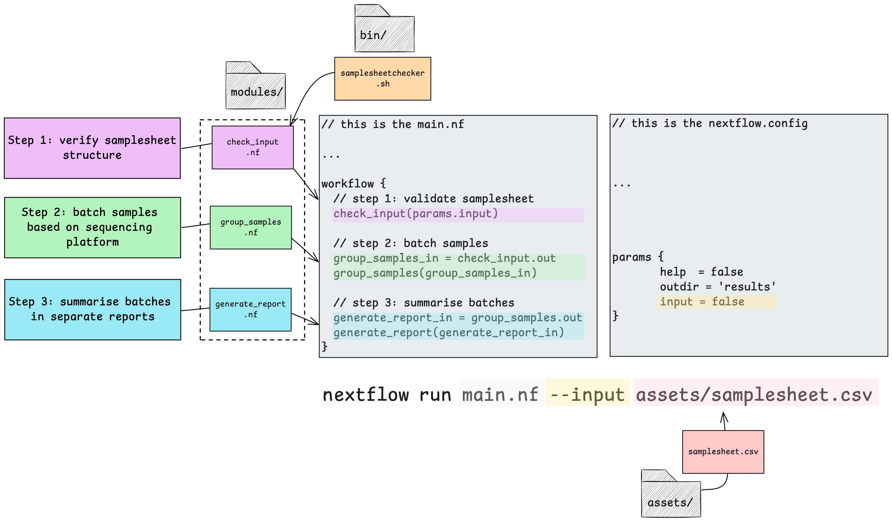
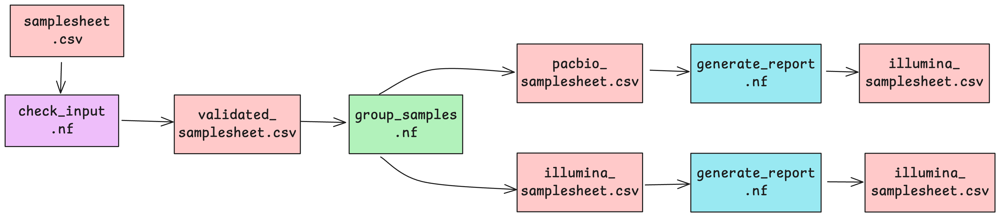
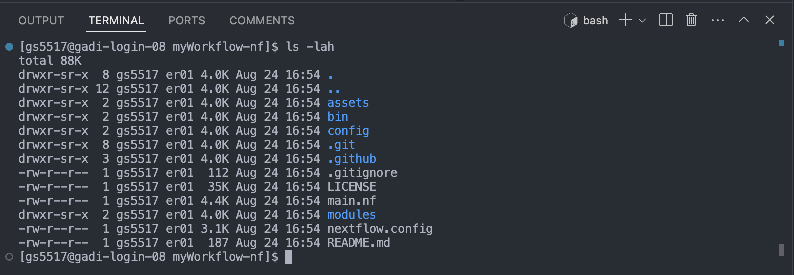
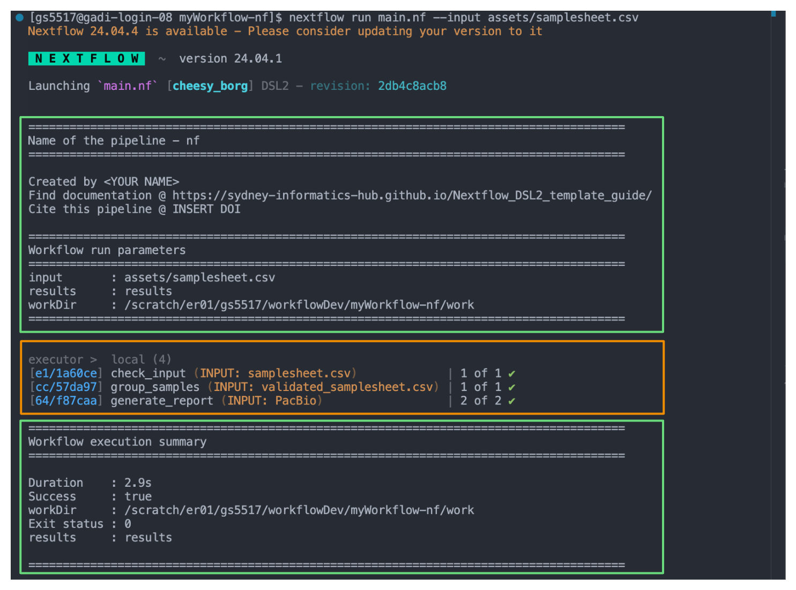
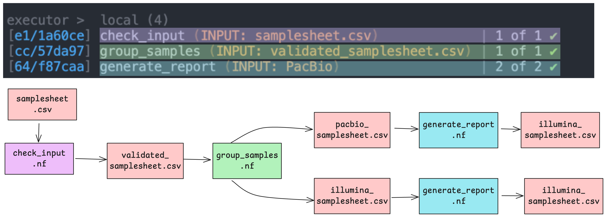
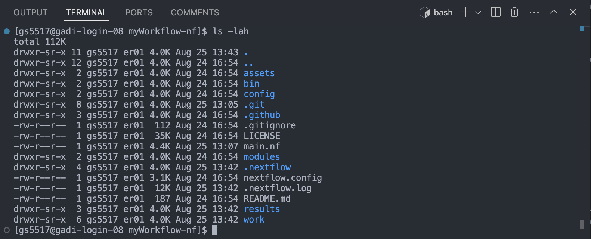
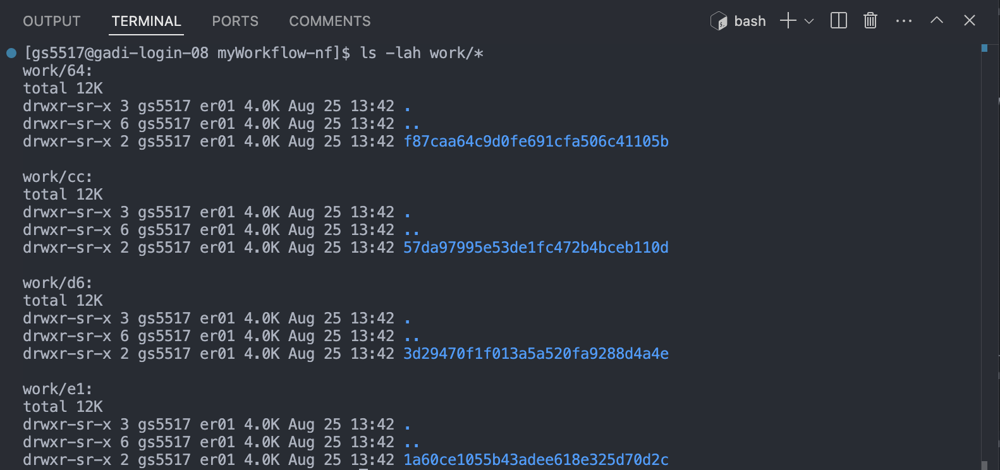
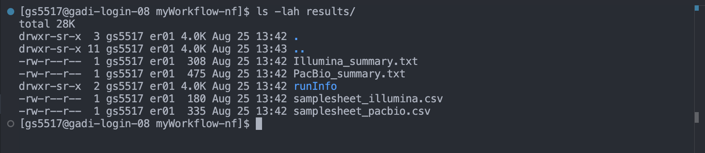

Template demo
template-nf contains a demonstration workflow that can help you explore the template’s functionality. This demo accepts a samplesheet as input and runs 3 processes, demonstrating various aspects of Nextflow functionality.
You will need to have Nextflow installed on your system to run the demo workflow.
We’ve designed this demo to show off the most simple aspects of the template, we have not included the use of the config/ directory as configuration profiles are often infrastructure dependent.
The demo workflow consists of 3 processes and requires only one input parameter be defined. It accepts samplesheet that can be found in the assets/ directory.

We have structured this demo to show how one can use inbuilt Nextflow features to do common tasks like run custom scripts, pass outputs of one process as inputs to another, publish outputs to a results directory, and process samples specified in a samplesheet in parallel.
The demo scenario
Imagine the processes run by this demo are the beginning of a very complex workflow where a user needs to batch samples for further processing depending on their sequencing platform. In this scenario, we’ve got a single samplesheet in csv format with the following structure (in your code see assets/samplesheet.csv):
| sample | fq1 | fq2 | platform | library | center |
|---|---|---|---|---|---|
| earlycasualcaiman | earlycasualcaiman_XXXXXX_1_1k.fastq.gz | earlycasualcaiman_XXXXXX_2_1k.fastq.gz | illumina | 1 | nfcore |
| hugelymodelbat | hugelymodelbat_XXXXXX_1_1k.fastq.gz | hugelymodelbat_XXXXXX_2_1k.fastq.gz | pacbio | 1 | nfcore |
| vapidkangaroo | vapidkangaroo_XXXXXX_1_1k.fastq.gz | vapidkangaroo_XXXXXX_2_1k.fastq.gz | pacbio | 1 | nfcore |
We need to organise samples based on their sequencing platform for subsequent processing as pacbio and illumina reads require different software and processing methods.
Upon executing this workflow, the samplesheet.csv file will be passed to the first process check_input, which runs a custom script stored in the bin/ directory to validate the structure of the samplesheet as per the conditions set out in the custom script. So these processes are going to validate our original input samplesheet format, group and split the samples into 2 new samplesheets, and summarise the batches separately.

Once successfully validated, the validated samplesheet is then passed to the next process group_samples to create 2 separate samplesheets based on which sequencing platform the samples specified in each row have been processed on.
After this, each platform-specific samplesheet will be summarised by the generate_report process in parallel, creating a separate summary text file for each.
The processes
Each process file follows the structure laid out in modules/template_process.nf. We’ve used:
- Comment lines
//to explain sections of code tagto associate each process execution with a custom label.publishDirto save outputs of selected processes to--outdir.input:to define the input channels of a process, similar to function arguments.output:to define output channels of a process, similar to function outputs.emit:to define the name of the output channel, which can be used to access the channel by name from the process outputscript:to define, as a string expression, the script or code that is executed by a process.
// Define the process
process generate_report {
// Define directives
// See: https://nextflow.io/docs/edge/process.html#processes
debug = false //turn to true to print command stdout to screen
tag ""
publishDir "${params.outdir}/", mode: 'copy'
container ''
// Define input
// See: https://www.nextflow.io/docs/latest/process.html#inputs
input:
path("")
// Define output(s)
// See: https://www.nextflow.io/docs/latest/process.html#outputs
output:
path("")
// Define code to execute
// See: https://www.nextflow.io/docs/latest/process.html#script
script:
"""
"""
}Run the demo
1. Use the github template feature to generate your own barebones workflow template, following the instructions.
2. Clone a copy of your repository to your chosen computational environment
git clone https://github.com/yourusername/your-pipeline.git3. Move into your workflow’s directory
cd your-pipelineNote the different directories and files in the repository. We’ve provided one common implementation for structuring your Nextflow code base in a way that is easy to maintain and read. It consists of

The template’s code repository is organised into a number of files and directories. Hidden directories prefixed with a . can be ignored for now, they are useful for configuring git and github and aren’t related to running your workflow. The code used in the demo workflow are:
main.nf: the primary execution script, it contains workflow structure, processes, and channels.nextflow.config: the configuration file, it contains a number of property definitions that are used by the pipeline.assets/: stores auxillary files. We’ve stored our examplesamplesheet.csvhere.bin/: stores custom scripts to be executed by Nextflow processes. We’ve stored a custom scriptsamplesheetchecker.shrun by the first process of this workflow here.modules/: contains code run by each process executed by the workflow. Processes have been separated into different.nffiles for the sake of readability and easy maintenance.
4. Run the pipeline
nextflow run main.nf --input assets/samplesheet.csvTake a look at the stdout printed to the screen. The demo workflow configuration and parameter customisations are documented here. You can use this to confirm if your parameters have been correctly passed to the run command.

When you execute the workflow on the command line, Nextflow will print a bunch of information to the screen. Some of this information is generated automatically (orange box), others are specified in the main.nf (green boxes). The information in the green boxes have been defined in our main.nf using log.info. It is an entirely optional feature and can be edited as you need.
log.info usage
This command can be used to print multiline information using Groovy’s logger functionality. Instead of writing a series of println commands, it can be used to include a multiline message.
log.info """\
This is a multiline message.
It can even capture parameters like
results : ${params.outdir}
"""Open the main.nf file to see how we’ve implemented this for summarising the workflow’s execution, pre-execution and post-execution:
// Print a header for your pipeline
log.info """\
=======================================================================================
Name of the pipeline - nf
=======================================================================================
Created by <YOUR NAME>
Find documentation @ https://sydney-informatics-hub.github.io/template-nf-guide/
Cite this pipeline @ INSERT DOI
=======================================================================================
Workflow run parameters
=======================================================================================
input : ${params.input}
results : ${params.outdir}
workDir : ${workflow.workDir}
=======================================================================================
"""// Print workflow execution summary
workflow.onComplete {
summary = """
=======================================================================================
Workflow execution summary
=======================================================================================
Duration : ${workflow.duration}
Success : ${workflow.success}
workDir : ${workflow.workDir}
Exit status : ${workflow.exitStatus}
results : ${params.outdir}
=======================================================================================
"""
println summary
}As the workflow starts, you will also see a number of processes spawn out underneath this. In Nextflow, processes are executed independently and can run in parallel. Nextflow manages the data dependencies between processes, ensuring that each process is executed only when its input data is available and all of its dependencies have been satisfied. In our demo, we’ve got one task per check_input and group_samples process, and two tasks as the generate_report process is run over each sequencer-specific samplesheet in parallel.

Because of how the data flows from process 1 (check_input) to process 2 (group_samples) to process 3 (generate_report) in our workflow, they will run in that order.
5. Explore the outputs
If you can see the workflow exercution summary has run without error, then the pipeline ran successfully. List (ls -la) the contents of your directory, you’ll see a few new directories (and a hidden directory and log file) have been created:

The work/ directory
As each task is run, a unique sub-directory is created in the work directory. These directories house temporary files and various command logs created by a process. We can find all information regarding this task that we need to troubleshoot a failed task.

Notice how the work directories correspond to the apparently random number/letter codes printed to the screen next to each process upon workflow execution. Each task in a Nextflow pipeline is assigned a unique identifier based on the input data, parameters, and code used. The output of the task is then saved (cached) in a uniquely named subdirectory within the work directory.
Each process in Nextflow generates a unique hash key that represents the combination of the process script, input data, and any parameters used. This hash key ensures that any change in the input, script, or parameters results in a new hash, and thus a new subdirectory in the work directory.
When a process is executed, Nextflow checks if there is already a subdirectory in the work directory that corresponds to the same hash key. If it finds one, this means that the process with the same inputs and parameters has been run before, and the cached results are available. If a matching directory is found, Nextflow reuses the cached output instead of rerunning the process. This is especially useful when working on large datasets or complex workflows where re-running every step can be time-consuming and computationally expensive.
If a workflow is interrupted or if you decide to make changes and rerun it, Nextflow can resume from where it left off. Since the results of previously completed tasks are cached in the work directory, Nextflow will skip these tasks and only run the processes that are new or whose inputs have changed.
The results/ directory
All final outputs for this workflow will be presented in a directory specified by the --outdir flag which is a custom parameter we have defined in the nextflow.config as params.ourdir. Note the default is set to results/.

If you were to rerun the workflow, using the --outdir flag and a different value, you could change the name of the output directory:
nextflow run main.nf --input assets/samplesheet.csv --outdir different_outAll Nextflow task outputs are saved to their unique subdirectories within work/ automatically. Although the work directory is crucial during the workflow execution, it’s typically not the place where you store final results. It’s more of a temporary workspace that can be cleaned up after the workflow is completed.
Nextflow requires users to explicitly instruct it to save final outputs after the workflow completes. Unlike the work directory, the location of this is specified by the user. Setting up an output directory is something we must do intentionally at the process level.
Note the contents of the results/ directory and how this has been defined by the demo workflow’s developer in the process scopes inside the modules/ directory using publishDir. For example, the group_samples process:
process group_samples {
tag "INPUT: ${checked_samplesheet.fileName}"
publishDir "${params.outdir}", mode: 'copy'
input:
path(checked_samplesheet)
output:
path("samplesheet_illumina.csv"), emit: illumina
path("samplesheet_pacbio.csv"), emit: pacbio
script:
"""
awk -F, '\$4 == "illumina"' OFS=, ${checked_samplesheet} > samplesheet_illumina.csv
awk -F, '\$4 == "pacbio"' OFS=, ${checked_samplesheet} > samplesheet_pacbio.csv
"""
}Here, we’ve chosen to output the files created by this process as a copy of what has been saved to the work/ directory. Alternatively, to save space we could have used symlink to reduce the creation of additional files.
The .nextflow/ directory
This directory contains a cache subdirectory to store cached data such as downloaded files and can be used to speed up subsequent pipeline runs. It also contains a history file which contains a record of pipeline executions including run time, the unique run name, and command line arguments used.
The .nextflow.log file
This file is created by Nextflow during the execution of a pipeline and contains information about all processes and any warnings or errors that occurred during execution.